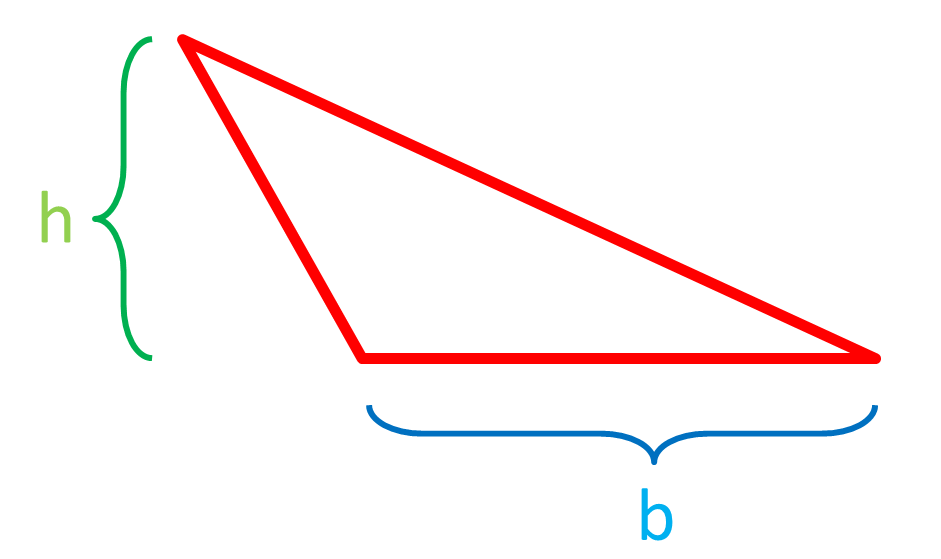
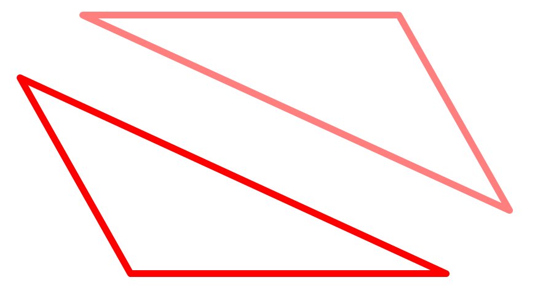
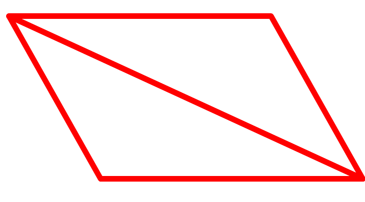

You must already know that the area of a parallelogram is the height times the base, if not then click here. Now lets make a random triangle with height h and base b:
Now lets make a mirror image of that triangle:
If we join them, then we get a parallelogram:
If this parallelogram has height h and base b, then its area must be [h * b], and if a triangle is half of a parallelogram, then the area of a triangle must be [(1/2) * h * b].